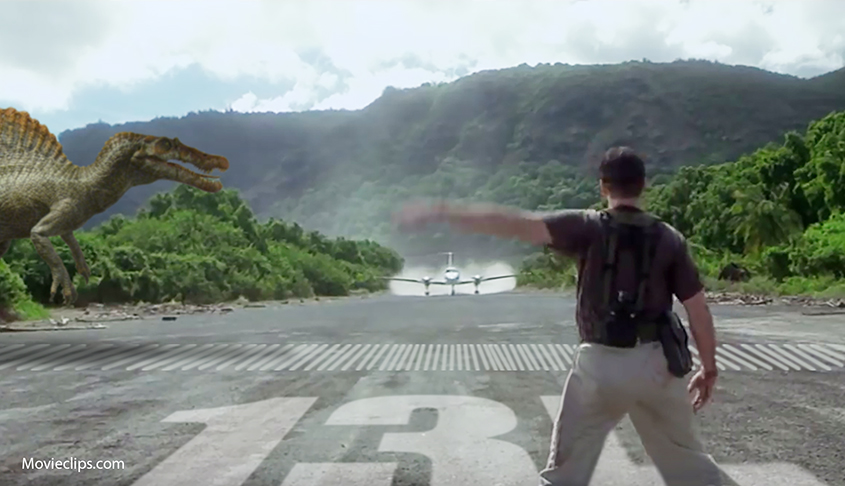
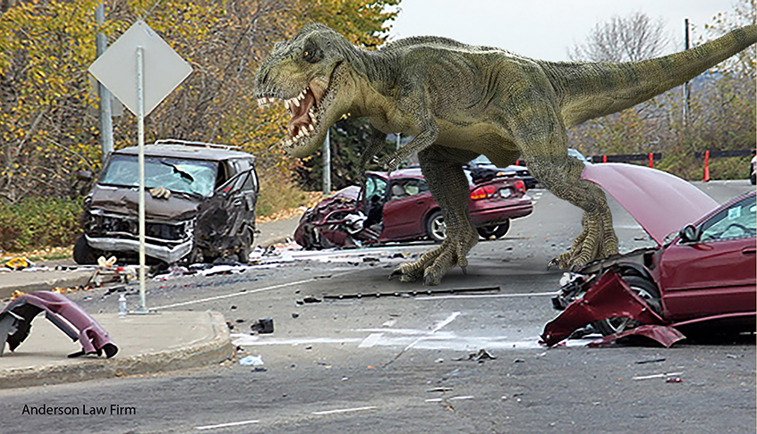
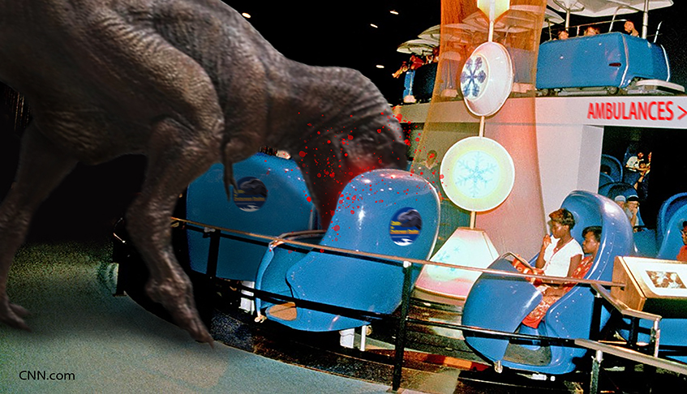
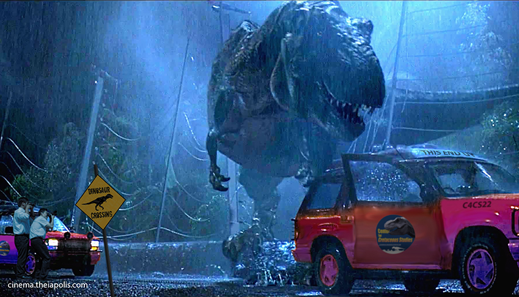
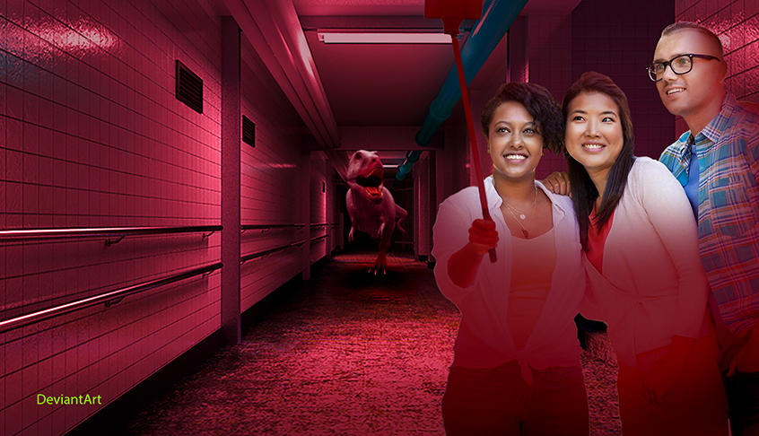

|
BAD DIRECTIONS. LOUSY DIRECTIONS.
DIRECTIONS YOU SHOULDN'T REALLY FOLLOW
The Center for Cretaceous Studies is a huge... well, pretty darn big, research institution, but
differs from any other live Dinosaur research business in the world in that we allow our guests first-hand and up-too-close
observation of these massive killing machi...uh, lovable, huggable, and often cute, animals.
Getting here is the easy part. Getting out of here is considered
a minor miracle. Follow these directions and you'll only be lost most of the day and not all of it!
FROM THE NORTH Drive south until you get here.
FROM THE SOUTH Drive north until you get here.
FROM THE EAST Drive west until you get here.
FROM THE WEST Drive east until you get here.
[Directions from the southwest, northeast, southeast, and northwest are available by calling us at 1-900-A-DINO-ATE-MY-BABY
at $5.95/minute]
C4CS INT'L (INTERDENOMINATIONAL) AIRPORT
Another great way to get here, and by 'great' we mean '3% safe', is to fly in. Hop aboard a private plane [Lord knows NO commercial
airline wants to come near this place] and take advantage of our Olympic-sized runway. Now with optional wind sock!
Airport Supervisor Yolanda Ulucky says the rutted-out runway will turn any 'bad' landing into a crash landing. Should
you survive that you'll quickly discover tC4CS INT'L (INTERDENOMINATIONAL)
AIRPORT is located INSIDE Cretaceousland! Habitat 9 - which can be really bad news if you plan
on landing here during the summer months when DinoResidents are running around out there.
On your final approach, seriously, your final approach, you can be 'talked down', even in clear weather conditions, by your
choice of Priest, Rabbi, Reverend, or suicide hotline volunteer.
For arrivals the tC4CS INT'L AIRPORT CEMETERY & USED AIRPLANE PARTS is at the end
of Runway 1L, our only runway. We use the term 'runway' very loosely.
| C4CS INT'L AIRPORT AWAITS YOUR ARRIVAL ATTEMPT |

|
| Teeny Tiny Problem With Being INSIDE A Live Dinosaur Habitat |
Even in the dead of Winter, with DinoResidents absent, there is no
staff to maintain runway integrity. If the snow drifts or black, sheet, or cubed ice doesn't collapse your plane's landing
gear, then the pot-holed runway, made from 5-ton Dinosaurs... or the three mile hike out of here - just might do you in.
We should really think about building an access road to the terminal one of these days, but that's hardly a priority concern
on our behalf. We're just trying to make it through the day around here. Once you get here, if you get here, you'll
understand.
Through years of various horrific incidents, our scientists have found that DinoResidents don't really care for the buzzing
of engines. Unlike scattering herds of herbivores in modern day Africa, ours attack anything that makes noise.
Finally, did ya notice how we made no mention whatsoever about departures? You could be the first!
YOUR FIRST MAJOR ACCOMPLISHMENT UPON ARRIVAL: PARKING
Your parking will be determined by our friendly 'Danger Level' signs at each parking lot entrance. Flashing red lights and
sirens are what we call 'persuasive' hints that you might want to make another choice in your parking choice, although none
of our warning sign lights have ever been green.
A red light indicates there is a DinoAlert! in progress - in other words a pretty darn good chance DinoResidents are in your
parking lot. Should you decide to donate your vehicle to tC4CS Used Car Parts,
please indicate so on the back of your parking stub. Odds are you won't be needing it where you're headed.
| PARKING LOT 4 VOTED "MOST INSURANCE-WORTHY" |

|
| Moving Vehicles Attract Them Like Moths To A Light |
Don't count on Valet parking. tC4CS
staff parks in an underground garage and wants nothing to do with the public parking lots.
Taking into consideration that the rare visitor able to leave at the end of the day is usually carted out in wheelchairs or
into a hearse, we have built our parking stalls extra-wide to accomodate getting in and out of your vehicle. Our thoughtful
construction crews have made it spacious enough between each parking stall so visitors leaving in full body casts have plenty
of room to fall between vehicles and roll around helplessly on the blacktop.
If we were you, we wouldn't worry so much about minor dings as we would worry about the Gorgosaurs. If (ok, when)
they get out of containment and into the parking lot, they, more than any other observed species, seem to love 'playing'
with cars. They re-arrange cars like furniture, or enjoy seeing how high they can toss them in the air, or how far they can
push them... it can get really messy. Specially if you haven't gotten out of your car yet.
If you choose Parking Lot [PL]6, bring water. We're not saying it's far off, but it has two zip codes. Once you arrive at
tC4CS Visitor's Center, we'll have free refreshments at a minimal cost.
| TOUR d'C4CS: UNFORTUNATELY NO CGI OR ANIMATRONICS |

|
| Make Sure You Exit Before The Ride Is Finished |
JUMP ABOARD THE AUTOMATED TOUR d'C4CS!
Your first stop once your admission loan has been approved should be the TOUR d'C4CS.
It is a Must See!! and comes with Must Use!! bandages and tourniquets. This self-guided tour allows you and
your family and former friends to watch our scientists, lawyers, doctors, lawyers, and research staff at work... or evacuating.
The indoor TOUR d'C4CS is accomplished from the comfort of theater-like seating,
mounted on moving platforms that continuously roll past viewing stations. We say they are 'theater-like' because the floor
is covered in old gum.
*NOTE: The outdoor version of the TOUR d'C4CS [see photo
below] is accomplished from our very own recalled four-wheeled vehicles. Not that they are 4-wheel drive. They just have
four wheels on them... or at least they do at the start of the tour. All outdoor Tours depart from Cretaceousland!.
| THEY REALLY DON'T CARE WHO HAS THE RIGHT-OF-WAY |

|
| Dinosaur Crossings Keep Our Auto Repair Shop Busy 24-7 |
As your platform rolls quietly along, like rocks in a can, you can
peer directly into our R&D departments via huge, patio door-sized, bullet-proof windows. You might see real research being
done, but most likely watch our employees at their computers doing online shopping, sleeping, paper-airplane throwing contests....
at which point we, uh, sort of speed up the platforms.
A surround sound speaker system [with volume control for our visually-impaired visitors] will narrarate the nonstop frenzied
activity. A voice-over narraration by former Hollywood actor and now full-time gin sponge, Hugh Awaik [we spared all expenses]
will explain what's supposed to be going on vs. what is going on in the room you are rolling past.
Did you find something happening in a room that interests you? Really? Serious?? Well, uh, at any point in the Tour you can
step off your moving platform to viewing areas and stay there as long as you wish. Maybe you'll witness something exciting,
such as exploding test tubes or DinoResidents in the middle of surgery regaining consciousness before they're supposed to.
*Note: At times we have to surgically remove personal items such as shoes, cellphones, backpacks,
feet, arms, and cameras from some of our smaller residents before they develop intestinal problems.
Some of our surviving TOUR d'C4CS riders have witnessed live egg hatching events
and exciting incidents such as loose Raptors in staff-filled research laboratories! With the surround sound speaker system,
you'll be able to hear all the screaming, yelling, roaring, and gunshots, even if you can't see through the blood-covered
glass.
TIPS TO FOLLOW, THINGS TO AVOID, REASONS TO LEAVE
Terminology:
It helps if you know some of the lingo around here.
DINOWATCH - A soft, non-alarming voice on the intercom, obviously from someone no where
near this dump, will inform you to be wary, or warier than normal, of your surroundings. This means two things: [a] conditions
are good for the possibilities of a Dinosaur in your room or hallway, and [b] those conditions are not good for your
long-term health and lifespan.
DINOALERT! - When the main lights go out, replaced with red emergency lights, along
with very, VERY, loud sirens, clanging bells... and people running down the hallway screaming for their lives, it's quite
possible there is something going on you should know about: DinoResident(s) have been positively spotted running loose/hunting
somewhere inside The Center. Probably not in your area, but then again,
with your luck.. probably.
During Watches or Alerts huge, flat-screen 12" HD monitors will show you precisely the location in reference to your current
position. Just slide your credit card along the swipe area on the right side of the screen, and after two or three commercials
[for legal services and funeral arrangements] you'll know exactly where the trouble is - if you're still around to watch.
One more thing about a DinoAlert!: Remember those 'conditions' mentioned first for a DinoWatch? Well, forget about 'em now.
Bascially, DinoAlert! means all hell is breaking loose. You should seek shelter NOW!NOW!NOW! Cute, little red emergency lights
will indicate where the wall meets the floor and guide you down the darkened halls to Public Safety Zones [PSZ] -- just like
the aisle lights in a commercial airliner that is on fire and about to crash.
LEARN THESE!
IAL: Immediate Automatic Lockdown. When a "DinoAlert" is sounded,
all doors inside the Center for Cretaceous Studies are bolted - immediately. So,
if you're looking for a safe place you may be out of luck.
LOL: Loss Of Life. Usually comes after an IAL and usually not
a laughing matter. Usually.
SO: Stepped On. Normally results in being placed on LOL list.
Also most common response used by the majority of emergency teams when you ask for help.
MPE: Missing, Presumed Eaten. The official designation for those
suffering a LOL.
PSZ: Public Safety Zones. A place where guests and visitors can
seek shelter. Usually an underground bunker [Cretaceousland!] or reinforced room
[tC4CS].
During your visit to The Center, you'll see an unbelievable number of white sheets
spread out on the hallway floors, stained with what looks like red "ink". Do not remove or peek under these sheets.
This is for your own safety - and also to keep your lunch down.
*Note: There is a small "Lunch Cleanup Fee" as listed in your copy of Mr. Happy Waivers should
you peek.
At any time while visiting inside The Center, please pay attention to all
bright yellow, safety orange, blood red, flashing directional signs, and deafening sirens. Those red-stained sheets are usually
the results of someone not paying attention to bright yellow, safety orange, blood red, flashing directional signs, and deafening
sirens.
| DINOALERT!s ONLY HAPPEN 5-30 TIMES PER HOUR |

|
| You'd Think The Mood Lighting Would Soften Them Up A Bit. But NOOooooo |
Not to over-emphasize a point, but when red flashing lights and sirens
are engaged during your visit, please seek shelter IMMEDIATELY. "Tuck and Roll" doesn't work well in this situation. Hiding
behind furniture only prolongs the inevitable. [Our DinoResidents have been known to sniff out a ham sandwich from over 300
yards away]
For your safety, well-stocked handgun vending machines are available in each PSZ at minimal cost and can be found next to
the soda and candy vending machines. If you select 'M-16 semi-automatic' but get a Pepsi, chances are you're at the wrong
vending machine. Gun Safety is always a concern here at The Center, although the
NRA wants nothing to do with coming out here to check on our standards. Luckily, none of our Raptors has ever died or been
seriously wounded by a gunshot wound from any of our visitors. This is due mostly from the fact that bullets are illegal on
the campus. Are you kidding? Each of these animals are worth, like, a jillion bucks. Besides, they usually eat the gun.
By the way, did we mention that ALL hallway doors go into IAL [Immediate Automatic Lockdown] when the DinoAlert alarms sound?
Good luck with that "seek shelter immediately" thing.
Ongoing Technology Makes The Center for Cretaceous Studies Safer Today Than It Was 4 Years Ago. Someday We Hope To
Afford That Technology And Use It Here!
GO TO NEXT PAGE
|